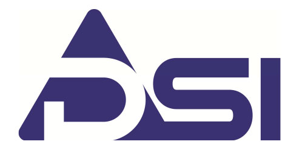
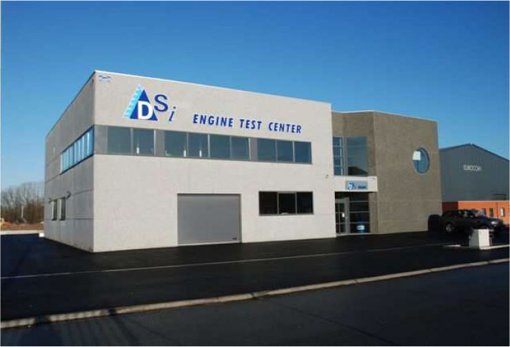
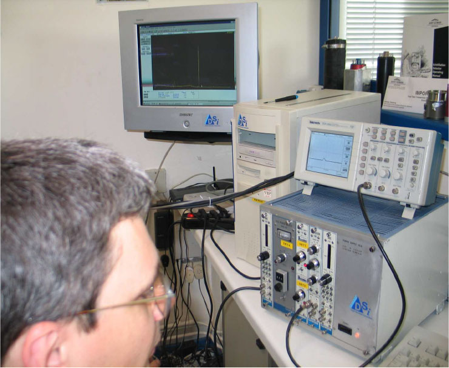

DSi, a Belgian company specialized in the nuclear field, offers equipment and engineering services related to nuclear metrology, radioprotection and industrial applications of radio-isotopes to mechanical engineering (i.e. material testing and on-line wear measurement).
DSi customers are :
- R&D centers in the nuclear field (C.E.A. Cadarache, E.D.F., "Les Renardi?res" ...)
- and companies in the automotive and petroleum sector (Renault F1, PSA, Bentley, Daimler, Toyota, Total France, BP, SK Corp. Korea, ...)
DSi products & services include engineering, equipment and measurement services in the field of:
- Nuclear Metrology and Radioprotection
- Material irradiation with high energy charged particles, neutrons and gamma rays
- Material Testing (on-line wear measurement of materials parts and hard coatings development of hard coatings).
- Analysis of materials using charged particles (PIXE, Xrf...)
- X-ray inspection (Industrial Radiography of electrical and mechanical components).
DSi assets:
- EEC Fusion Experience. Fast counting electronics for neutron and gamma ray detection systems for Textor, J?lich, Germany.
- Own laboratories for the abovementioned activities.
- Close cooperation with local universities involvedin the production, or in industrial applications, of radio-isotopes: University of Liege, University of Namur and University of Louvain-La-Neuve



Contact Person
Mr Thierry Delvigne
Directeur
email: info@deltabeam.net
email: thierry.delvigne@deltabeam.net
tel : +32 69 64 06 04
fax: +32 69 78 00 79
http://www.deltabeam.net
Z.I. Tournai Ouest 1
3 rue du Mont D'Orcq
7303 Froyennes
Belgium
Contact Person
Mr Thierry Delvigne
Directeur
email: info@deltabeam.net
email: thierry.delvigne@deltabeam.net
tel : +32 69 64 06 04
fax: +32 69 78 00 79
http://www.deltabeam.net
Z.I. Tournai Ouest 1
3 rue du Mont D'Orcq
7303 Froyennes
Belgium